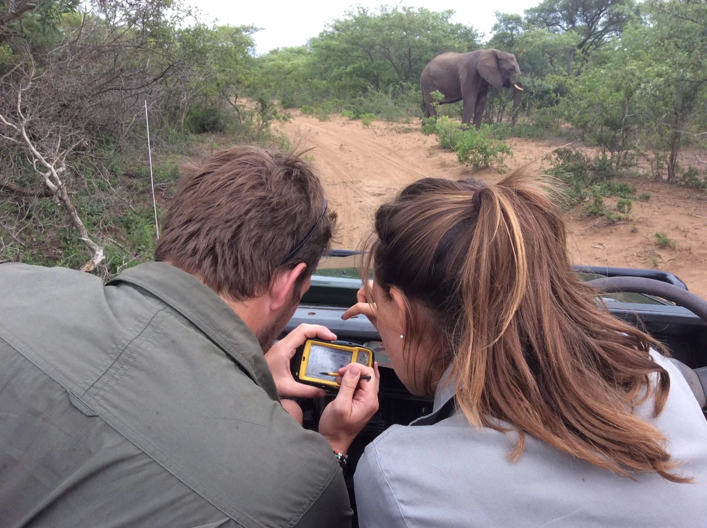

How we found each other:
Andrea and Wynand first met in the Kruger National Park in 2018. Wynand was a game ranger at the time, located at the Letaba Camp. Andrea, who was a veterinary student then, had booked a game drive and Wynand was the ranger to accompany them. They hit it off and Wynand invited Andrea on a few drives in his off time. The day before Andrea left, they had a braai, but agreed that a long-distance relationship wouldn't work, seeing as she lived in Pretoria and was studying at the University of Pretoria.
In October of 2021, a vet practitioner in Phalaborwa was to be declared bankrupt, and decided to sell 50% of his stocks to Andrea, of whom he had heard of from her previous professors. A month later she made the move to Phalaborwa where she then started working as a full-time veterinarian.
On many occasions Andrea was called in to attend to sick and injured animals that were injured or sick in the surrounding areas close to the Phalaborwa Gate. In January of 2022, Andrea was called to a scene near the Letaba Camp where a wild dog had been injured and it was Wynand who was one of the rangers waiting with the animal.
They decided that they were going to give dating a shot, and have been happy ever since. After a few months of dating, Wynand decided to ask Andrea to marry him while they were on a trail hike and she said yes!
Take a look at our proposal images and videos:
View